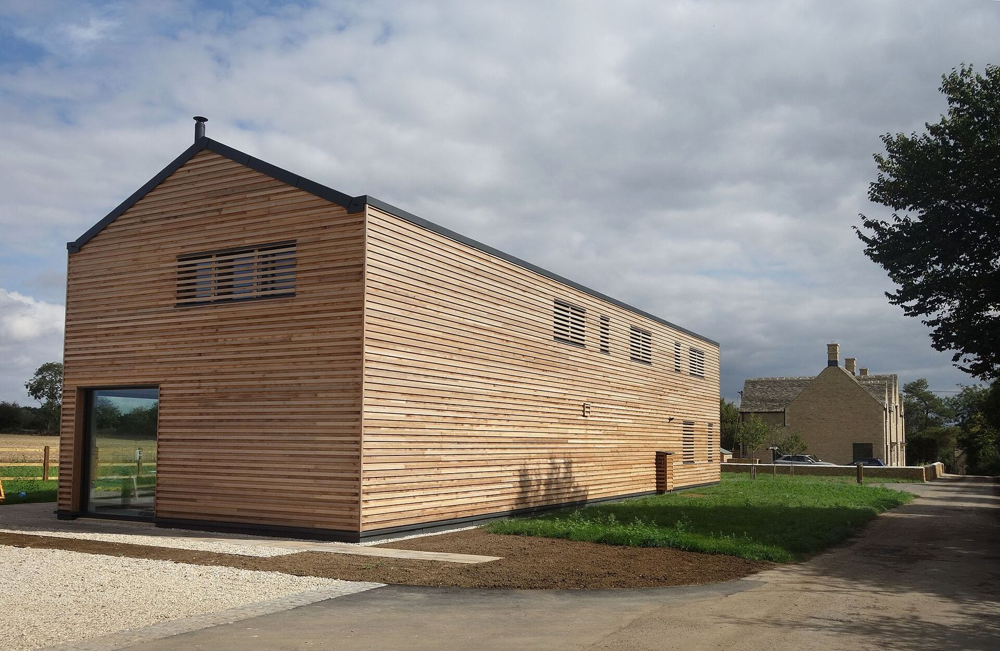
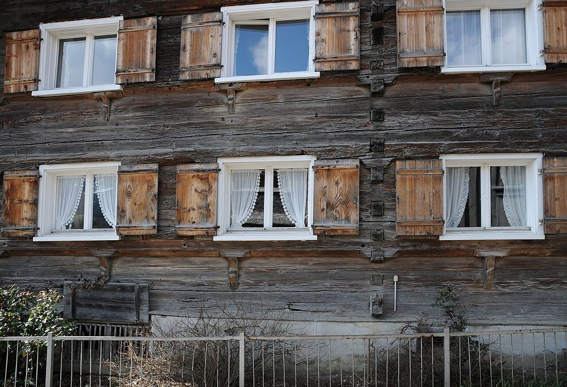

Atelier Sorbier architectes · Chambéry
Architectes à Chambéry, pour maisons et communes
L'Atelier Sorbier conçoit des maisons, des rénovations et des extensions pour des particuliers, et des bâtiments pour de petites communes.
Nous écrire

Projets
Quatre projets, de l'extension de maison à l'école
-

Photo provisoire, qui ne montre pas ce projet. Asurnipal, CC BY-SA 4.0, Wikimedia Commons. École des Tilleuls
- Programme
- Extension d'école
- Lieu
- La Motte-Servolex
- Année
- 2025
- Surface
- 380 m²
-

Photo provisoire, qui ne montre pas ce projet. Shixart1985, CC BY 2.0, Wikimedia Commons. Maison des Fauvettes
- Programme
- Maison bois
- Lieu
- Le Bourget-du-Lac
- Année
- 2024
- Surface
- 140 m²
-

Photo provisoire, qui ne montre pas ce projet. Neil Theasby, CC BY-SA 2.0, Wikimedia Commons. Grange de la Combe
- Programme
- Rénovation
- Lieu
- Saint-Pierre-d'Entremont
- Année
- 2023
- Surface
- 210 m²
-

Photo provisoire, qui ne montre pas ce projet. Calistemon, CC BY-SA 4.0, Wikimedia Commons. Extension Verrier
- Programme
- Extension de maison
- Lieu
- Chambéry
- Année
- 2022
- Surface
- 45 m²




L'atelier
Deux architectes, un atelier à Chambéry
L'Atelier Sorbier est un cabinet d'architectes installé à Chambéry. Hélène Sorbier et Inès Maréchal y conçoivent des maisons, des rénovations et des extensions pour des particuliers, ainsi que des bâtiments pour de petites communes.
Elles suivent chaque projet de la première rencontre à la réception du chantier.
- Associées
- Hélène Sorbier et Inès Maréchal, architectes DPLG, inscrites à l'Ordre des architectes
- Adresse
- 14 rue de Boigne, Chambéry
- Téléphone
- 04 00 00 00 21
Une maison, une rénovation, une extension ?
Écrivez-nous quelques lignes sur votre projet : nous vous répondons pour convenir d'un premier rendez-vous.